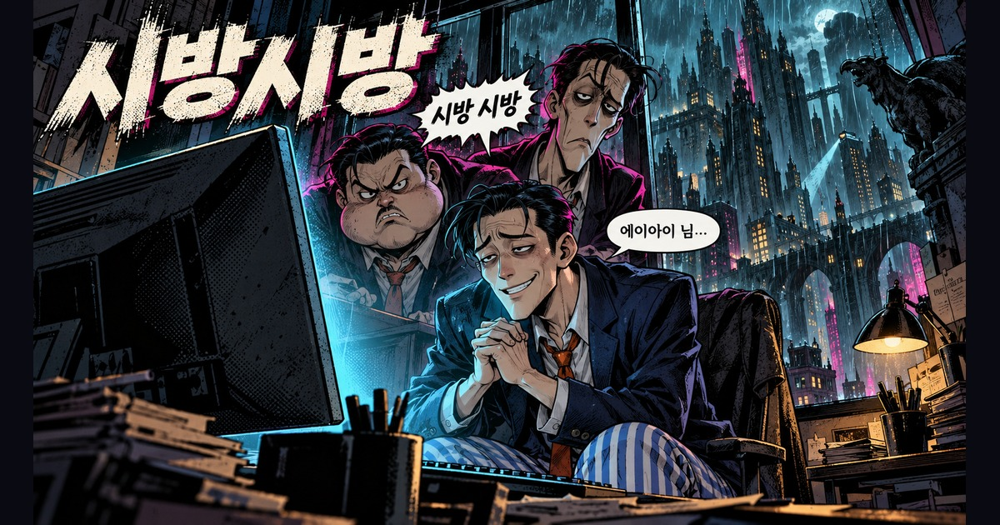

TROT · WEBTOON · MUSIC VIDEO
시방시방
시방 트리오 · 2분 55초
AI님 앞에서 한없이 공손해지는 세 사람.시방 트리오의 2분 55초 웹툰 트로트 뮤직비디오 〈시방시방〉을 감상하세요.
창작 · 연출 — 미리내맨 김준호

돈은 내가 내고
돈은 내가 내고,눈치도 내가 봐.
AI님 앞에서 한없이 공손해지는 세 사람의 이야기입니다.어두운 도시의 과장된 웹툰과 트로트의 흥이 만납니다.
시방 트리오
시방 트리오는 이 작품에 등장하는 세 인물의 가상 밴드입니다.AI로 만든 노래와 32컷의 웹툰 원화를 뮤직비디오로 엮었습니다.
감상 방법
첫 시안 중앙의 재생 버튼을 누르면 영상이 시작됩니다.같은 자리에서 재생과 일시정지를 전환할 수 있습니다.가사 자막은 작은 배지로 켜고 끕니다.
함께 읽기 — 내 돈도 안 받냐AI 서비스에 돈을 내는 사람의 황당한 처지를 노래로 풀어낸 또 하나의 풍자입니다.